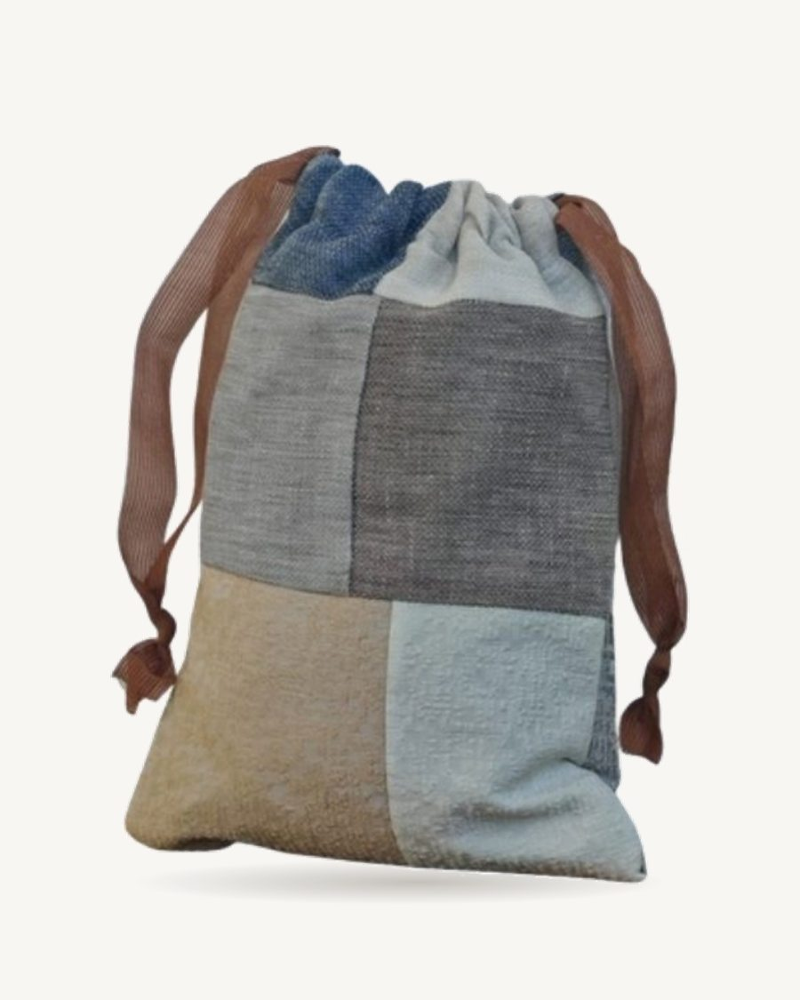
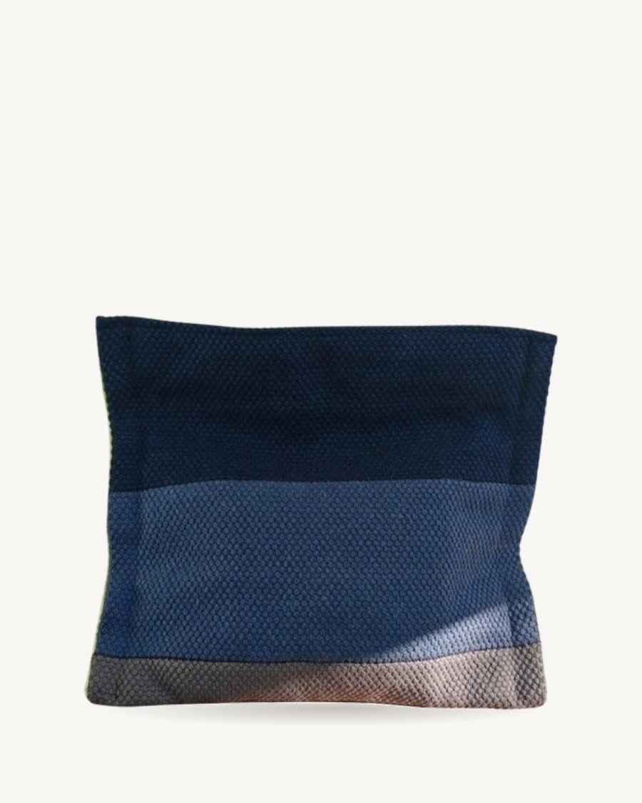
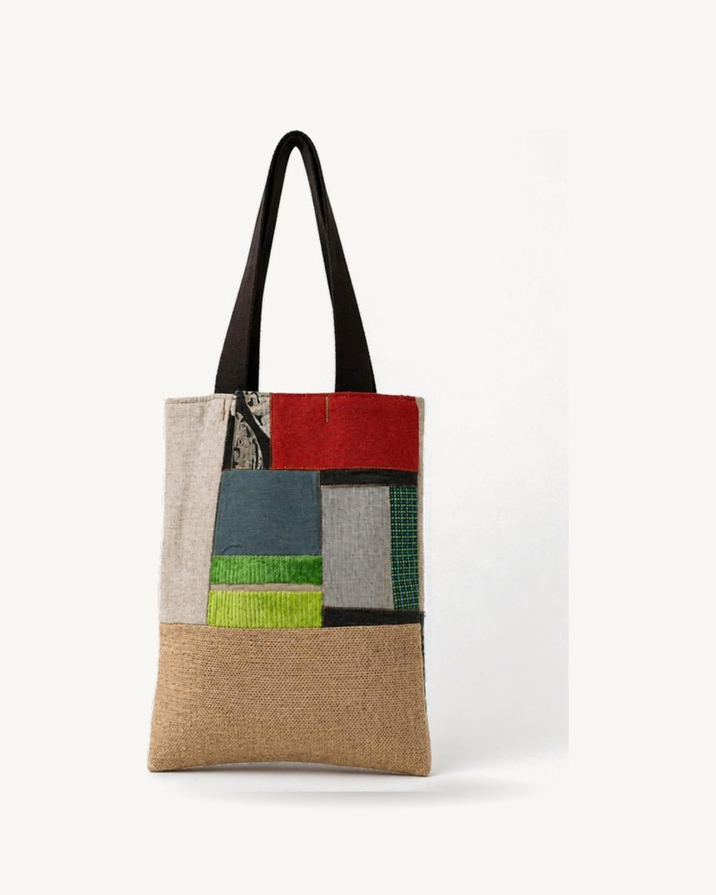
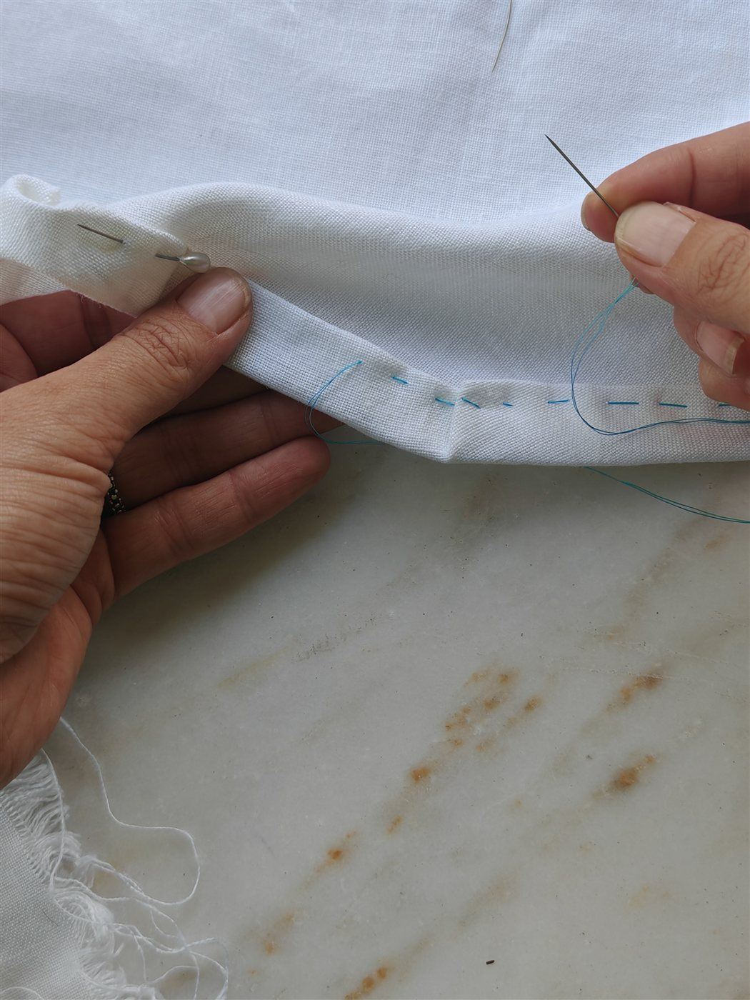

Regali aziendali sostenibili e originali, cuciti con i vostri tessuti
Prendo i campionari che la vostra azienda ha dismesso e li trasformo in regali per clienti e architetti, oggetti da portare in fiera, kit per i dipendenti. Chi li riceve tiene in mano i vostri tessuti, in un oggetto che usa ogni giorno. E i campionari non finiscono nei rifiuti.
- Cosabustine, sacchetti, shopper, porta campioni, oggetti su richiesta
- Con cosai vostri campionari dismessi
- Quantida 20 a 150 pezzi, ogni pezzo diverso
- Quandoordinate almeno 8 settimane prima

Oggetti piccoli, utili, fatti per durare
Sono pezzi che cucio già ogni giorno con i campionari. Per voi li faccio con i vostri tessuti, e se volete con un'etichetta con il vostro nome.


Regali di Natale per clienti e architetti
Un regalo di Natale o di benvenuto che racconta i vostri tessuti meglio di un catalogo.
Gadget aziendali per le fiere
Shopper per i materiali, porta campioni, piccoli oggetti da dare allo stand. Un modo concreto di mostrare cosa fate dei vostri scarti.
Regali aziendali per i dipendenti
Un kit per tutta l'azienda, o un regalo per un anniversario, con i tessuti che hanno visto passare.
Dai vostri campionari al pacco pronto
- Mi dite cosa vi serve, per chi, quanti pezzi e per quando.
- Mi mandate i campionari. Io vi propongo l'oggetto, i tessuti e il preventivo, con una prova.
- Dopo il vostro sì i pezzi si cuciono uno per uno nel mio laboratorio in Sicilia: tre o quattro settimane per un ordine pieno.
- Ve li spedisco pronti, con la scheda di recupero dei tessuti usati.
Per questo vi chiedo di ordinare almeno 8 settimane prima della data in cui vi servono. Per i regali di fine anno, entro metà ottobre.

Prima di scrivermi
Quanti pezzi potete fare?
Da 20 a 150 pezzi per ordine (fino a 60 per le shopper), perché ogni pezzo è fatto uno per uno e i campionari sono tutti diversi. Per quantità più grandi scrivetemi e valutiamo insieme tempi e fattibilità.
I pezzi sono tutti uguali?
No, ed è il loro valore: stesso modello, tessuti diversi. Possiamo tenerli in una gamma di colori scelta da voi.
Possiamo mettere il nostro marchio?
Sì, con un'etichetta cucita o un cartellino. Vi spiego le possibilità nella proposta.
E se non abbiamo campionari?
Posso usare i tessuti di recupero che ho in laboratorio. In quel caso l'oggetto racconta il riuso in generale, non i vostri tessuti.
Fate anche regali aziendali di Natale?
Sì. Per averli in tempo per le feste, ordinateli entro metà ottobre: servono almeno 8 settimane tra proposta, arrivo dei campionari e cucito.
Quanto costa?
Dipende dall'oggetto, dalle quantità e dai tempi. Vi mando un preventivo su misura dopo aver visto i vostri tessuti.